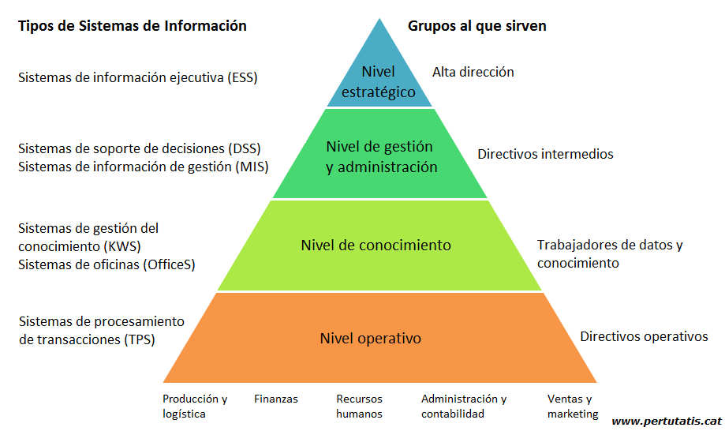

SISTEMAS DE INFORMACIÓN
Un Sistema de Información (SI) es un conjunto de componentes interrelacionados que trabajan juntos para recopilar, procesar, almacenar y difundir
información para apoyar la toma de decisiones. Además apoyan la coordinación, control, análisis y visualización de una organización.
CARACTERISTICAS DE UN SI
Los sistemas de información ayudan a que las empresas mantengan un buen orden de sus datos, así como la seguridad de su información y esté lista para ser utilizada.
Sin embargo, no cualquier programa computacional es un sistema de datos. Revisemos las características que deben poseer:
- Requieren una metodología de organización
- Requieren la gestión de profesionales de datos
- Priorizan la centralización de la información
- Optimizan el flujo de datos en las organizaciones
- Permiten la actualización de los datos
- Son flexibles y se adecuan a las necesidades empresariales
ELEMENTOS DE UN SI
Un sistema de información no solamente es un programa informático, sino que tiene la forma de una red que posibilita el buen uso y gestión de los datos.
Veamos qué elementos principales componen a estos sistemas:
- Software
- Hardware
- Personas
- Técnicas
- Datos
TIPOS DE SISTEMAS DE INFORMACIÓN
Los sistema de información cuentan con la ventaja de que no solo tienen una única función y pueden ser útiles para todo
tipo de sectores e industrias, dependiendo de sus necesidades y solicitudes. Para ello existen diferentes tipos de sistemas
que cumplen con funcionalidades especiales y que puedes adaptar a tu negocio.
- Sistemas de procesamiento de transacciones
- Sistemas de información gerencial
- Sistemas de control de procesos de negocio
- Sistemas de información de marketing
- Sistemas de colaboración empresarial
- Sistema de apoyo a la toma de decisiones
- Sistemas de información ejecutiva

Te invitamos a visitar el siguiente enlace donde se encuentra esta información más detallada:
Visitar blog